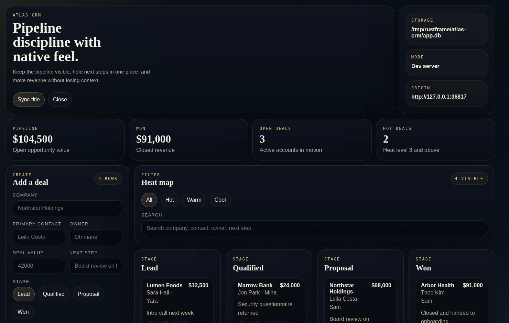

Workflow Wedge
Too native for a tab. Too small for a full desktop project.
RustFrame is the narrow path for frontend-heavy workflow tools that still need a real desktop window, local SQLite, scoped machine access, and packaging, without forcing a visible desktop-framework project on day one.
Fit
RustFrame is a wedge, not a general desktop answer.
It makes the most sense when the app is still mostly frontend code, but the workflow has outgrown a browser tab.
You want the runtime to own the desktop shell around a frontend-heavy app.
- The app should stay mostly HTML, CSS, and JavaScript.
- You want embedded SQLite without building the full desktop stack yourself.
- You need scoped filesystem access, allowlisted commands, or multi-window views.
- You want to start small and eject only if the app outgrows the hidden runner.
You already know the product needs broad native depth or a larger ecosystem.
- The app works fine as a browser tab or PWA.
- You need mature plugin ecosystems and deeper native APIs immediately.
- You want Chromium-level rendering consistency across every host.
- You are already productive in Tauri or Electron and not feeling friction.
Target Workflow
One concrete job RustFrame should own: the local research desk.
research-desk is the proof point for the product story:
awkward in a browser tab, but still not big enough to deserve a full native-first rewrite on day one.
Scope a local archive
Declare workspace/ and tools/ in the manifest so the app works against one known archive instead of the whole machine.
Index source files into SQLite
Store document metadata, status, reviewer notes, and queue state in the runtime-managed local database.
Open focused reader windows
Use secondary windows for deep reading while keeping one runtime, one bridge contract, and one shared local dataset.
Run a hardened Python indexer
Allowlist a local indexing command and capture stdout or stderr directly in the UI without exposing a general shell.
Export queues or package the tool
Ship the same workflow as a host-native desktop bundle once it stops being an experiment.
Ship
Packaging is already part of the flagship app story.
RustFrame should matter after the experiment. If the workflow becomes something people actually install, the packaging path should already be part of the default model.
Build and verify on the native host.
cargo run -p rustframe-cli -- package research-desk --verifyThe generated or ejected runner becomes a host-native bundle, and the CLI now validates the emitted metadata, scripts, and archive layout as part of the path.
Production credibility now has an explicit boundary.
- Repo CI verifies packaged bundles on Linux, Windows, and macOS hosts.
- Platform promises and non-promises are now documented instead of implied.
- Signing, notarization, updates, and release prep have dedicated operator guides.
- Declared relative filesystem roots are still copied with the app, so bundled workspaces survive release builds.
Be honest about what is still early.
- Cross-host validation still needs the matching native host toolchain.
- Signing and updates are documented, but they are still release-layer responsibilities outside the runtime.
- Linux still has the heaviest GTK, WebKitGTK, and display-stack constraints.
Flagship And References
Lead with one credible workflow. Keep the rest as references.
The repo still benefits from a broad example set, but the public story should start
with research-desk and use the rest as implementation references around it.
Flagship workflow
Research Desk
A local archive review app that combines SQLite, real source files, allowlisted automation, and multi-window review in one concrete tool.

Dense structured data
Atlas CRM
A good reference for richer list, lane, and mutation patterns over SQLite-backed records.

Earlier file-centric reference
Prism Gallery
The previous closest file-centric reference. Useful for layout ideas, but no longer the main product story.
Docs
Move from the landing page into the real contract.
The featured guide cards below are now driven from the same docs registry as the docs sidebar, so the homepage stops drifting whenever the documentation changes.